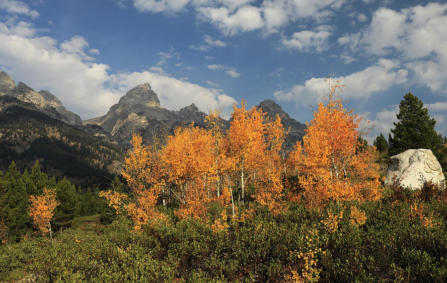
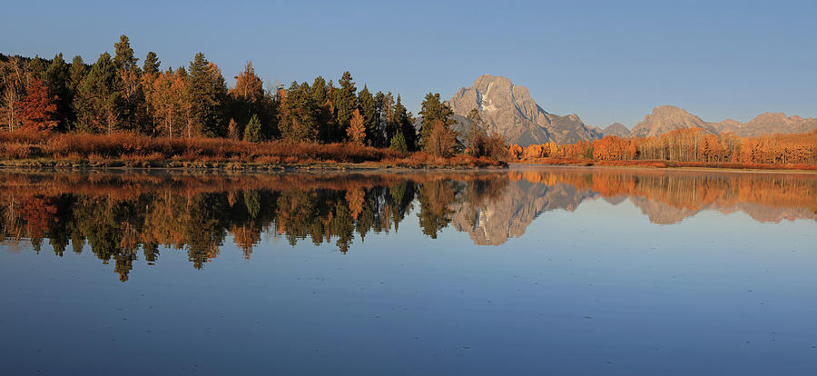
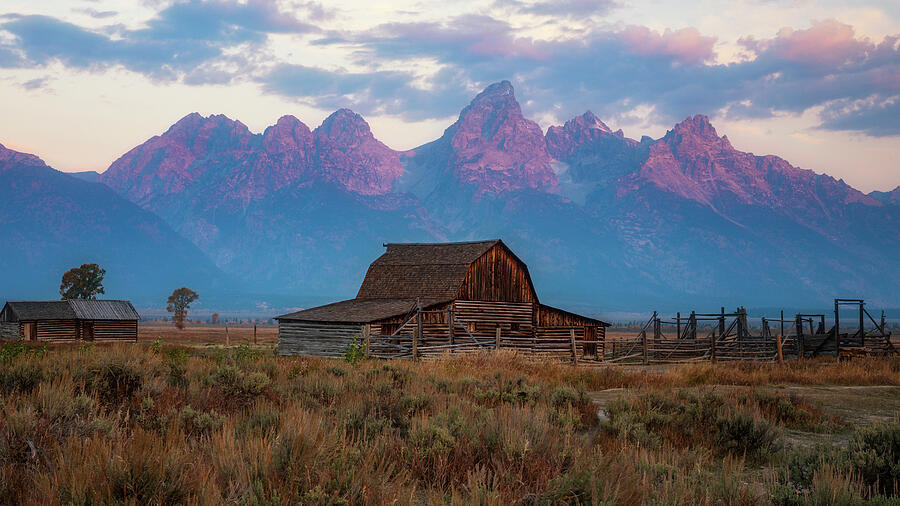
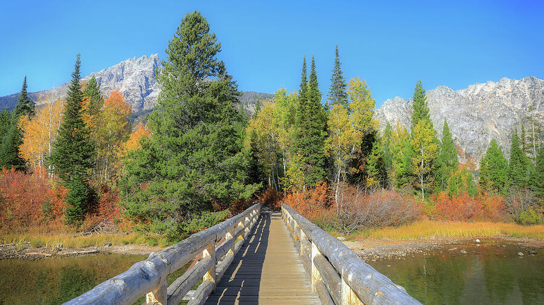
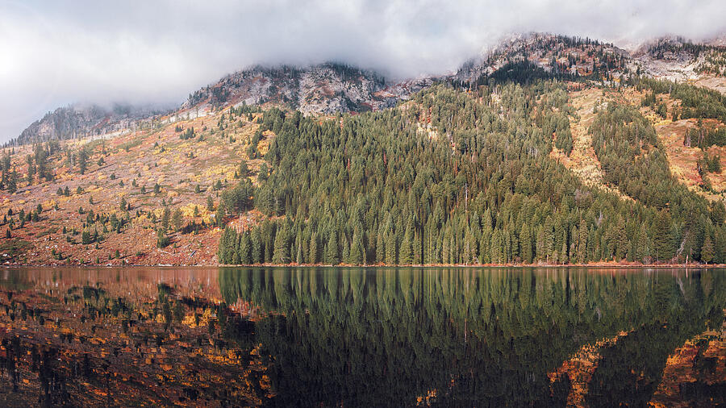
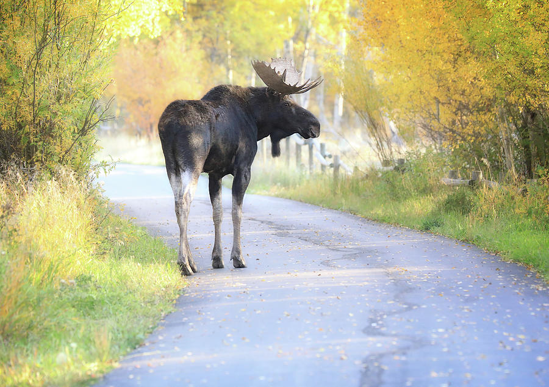
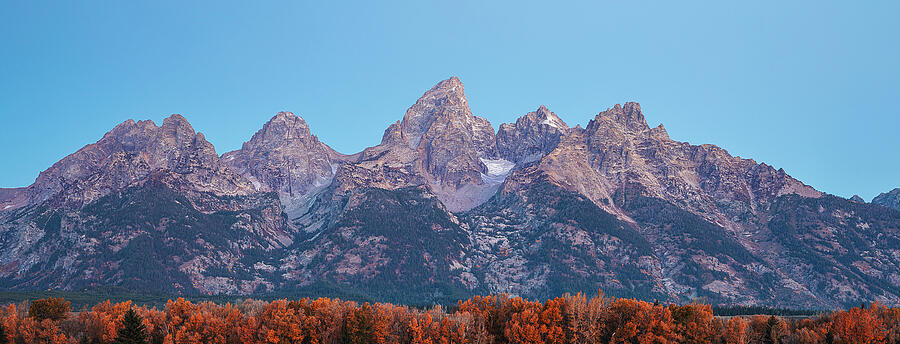

Grand Teton National Park rewards photographers who slow down. The famous viewpoints are only part of the story. In fall, the visual interest often comes from the layers between the mountains and the camera: aspens turning gold, willows and shrubs warming to orange and red, still water, mist, wildlife corridors, weather moving across the peaks, and the brief light at the beginning and end of the day.
This field note combines my Grand Teton photographs with practical trip-planning information from the National Park Service. Conditions, construction, wildlife activity, weather, and fall color can change quickly, so use this as a starting point and confirm current park alerts before heading out.
Color intensity and timing vary with moisture and temperature. Build flexibility into the trip.
Reflections, fog, alpenglow, and side light can change a familiar viewpoint completely.
Use a long lens and never trade distance or safety for a closer photograph.
Fall color in the Tetons is more varied than a wall of yellow aspens.
The National Park Service notes that quaking aspens commonly turn yellow, with occasional orange and red leaves, and grow throughout Grand Teton near water, mountain slopes, and evergreen stands. Cottonwoods brighten riparian areas, black hawthorn can turn red, and willows add yellow and orange across damp lowlands.
That variety matters photographically. A broad mountain scene can work when the light is dramatic, but smaller combinations of evergreen, aspen, willow, rock, water, and sky often tell the season more clearly. The photograph below is a good example: the autumn trees become the main subject while the Tetons remain the geographic anchor.

.jpg)
Oxbow Bend and the Mount Moran wetlands: reflections depend on patience.
Oxbow Bend is one of the places specifically identified by the National Park Service for quaking aspen fall color. It is also one of the classic places to work with Mount Moran, water, cottonwoods, willows, and broad seasonal color in a single frame.
For photographers, the attraction is not just the mountain. Water conditions can completely change the scene. A smooth surface gives you symmetry and reflection; a breeze turns the same view into texture. Instead of forcing one composition, look at what the water is doing and build the photograph around the conditions you actually have.

At reflection locations, arrive with more than one composition in mind. Try the obvious wide view, then look for smaller relationships between water, cottonwoods, willow color, and the mountain. If the reflection disappears, the scene may still work better as a layered landscape than as a failed mirror image.
Mormon Row works because the landscape and human history share the frame.
The T. A. Moulton Barn is one of Grand Teton's most photographed historic structures, and it remains compelling because it gives scale to the mountains behind it. In fall, lower-angle light and the muted sagebrush foreground can keep the scene from becoming overly colorful or busy.
It is a place where arriving early is useful even if the sky never becomes dramatic. The barn, fences, open land, and Teton skyline give you several compositions, not just the familiar postcard view.

Mormon Row and Taggart Lake both have construction impacts this year.
According to the National Park Service construction update dated August 18, 2026, Mormon Row remains open while construction continues nearby, with possible equipment, noise, and viewshed impacts. Taggart Lake Trail is partially open; the shorter northern route is closed for the season and access is from the south via a longer, steeper route. Conditions can change, so check the current NPS construction page immediately before your visit.
Taggart Lake rewards photographers who move beyond the overlook.
The Taggart Lake area adds something different to a Teton photography trip: trail-level compositions. Bridges, water, evergreen trees, colorful shrubs, and changing glimpses of the mountains create photographs that feel like being inside the landscape rather than standing at a roadside viewpoint.
That is valuable in a fall portfolio. A sequence becomes more interesting when every photograph is not built around a distant mountain and open foreground.

String Lake: clear days are beautiful, but fog can be more interesting.
String Lake sits at the base of the Teton Range and gives photographers access to shoreline views, forest, reflections, trails, and nearby mountain scenery. The National Park Service notes that parking is limited, which is another reason to arrive early.
A perfectly clear morning is not the only goal. Fog and low cloud can simplify the mountain background and shift attention toward forest texture and reflections. In photographs, atmosphere often creates more depth than an entirely blue sky.

Moose-Wilson Road: wildlife is part of the fall story, but distance comes first.
Moose-Wilson Road passes through forest and marsh habitat and is a well-known wildlife corridor. The National Park Service identifies the road as a place to find black hawthorn, and the surrounding habitat can support moose, bears, deer, and other wildlife.
For photographers, the rule is simple: use focal length instead of your feet. Grand Teton requires visitors to stay at least 100 yards from bears and wolves and at least 25 yards from all other wildlife. If an animal changes its behavior because of you, you are too close even if you believe you are beyond the minimum distance.

- Stay at least 100 yards from bears and wolves.
- Stay at least 25 yards from moose, elk, bison, and other wildlife.
- Never stop in the travel lane for a wildlife photograph; use established pullouts when possible.
- Do not chase, surround, call to, feed, or position yourself in a way that changes an animal's movement.
Blue hour is worth waking up for even when sunrise itself is uncertain.
The Tetons can be especially strong before the direct sun reaches the valley. Blue hour gives snow, rock, and sky a cooler palette while the autumn vegetation remains warm enough to separate from the mountains. That color contrast can make a panorama feel more dimensional without relying on dramatic processing.

String Lake after dark: scout first, photograph second.
Night photography changes the practical side of working in the park. A composition that feels simple during daylight can become difficult once the shoreline disappears into darkness. Scout your foreground and route while there is still light, know exactly where your vehicle and trail junctions are, carry a headlamp, and check current weather before committing to a late session.
Reflections can be especially effective on a calm night because the lake creates a second field of stars. The vertical photograph below shifts the emphasis away from the daylight mountain panorama and toward the sky itself.
.jpg)
A practical fall photography day in Grand Teton.
There is no perfect itinerary because weather and wildlife should change your plan. But if I were building a flexible day around the locations represented in this field note, I would think in terms of light and habitat rather than checking off viewpoints.
Choose one primary scene—Mormon Row, Oxbow Bend, or another east-facing Teton view—and arrive before the color begins.
Move toward water or trails while the light is still directional. Reflections and forest edges often hold interest after the first sunrise color disappears.
Use cloud cover, trails, intimate fall details, scouting, and location changes rather than forcing a grand landscape under flat light.
Watch weather on the range and leave room for wildlife encounters from safe pullouts. Do not let a rigid schedule override better conditions elsewhere.
If skies are clear and you are prepared for night conditions, return to a composition you already scouted in daylight.
What makes the Tetons memorable in fall.
The strongest fall photographs are not always the ones with the most color. Grand Teton works because the season creates contrast: warm vegetation against cold rock, calm water beneath jagged peaks, fog softening a landscape known for drama, a moose moving through bright foliage, or a dark mountain silhouette beneath the Milky Way.
That is why I keep returning to these images. Together they feel less like a checklist of famous viewpoints and more like the rhythm of the park itself—early light, changing weather, trails, wildlife, water, and finally darkness.